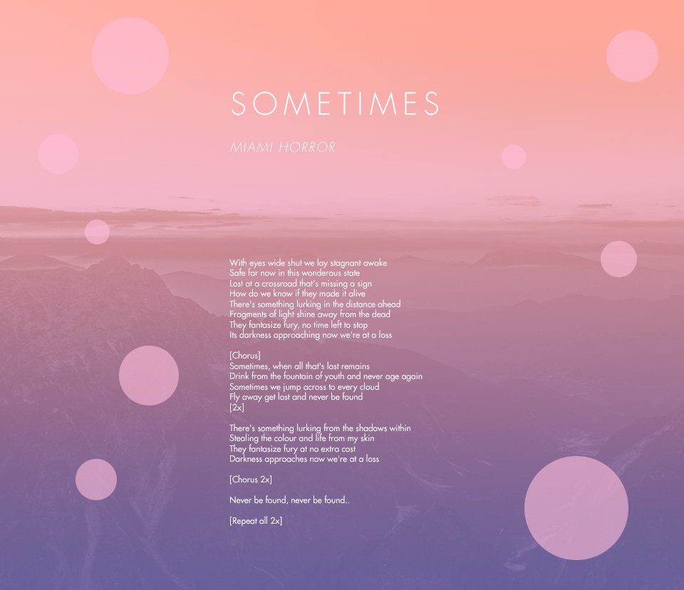
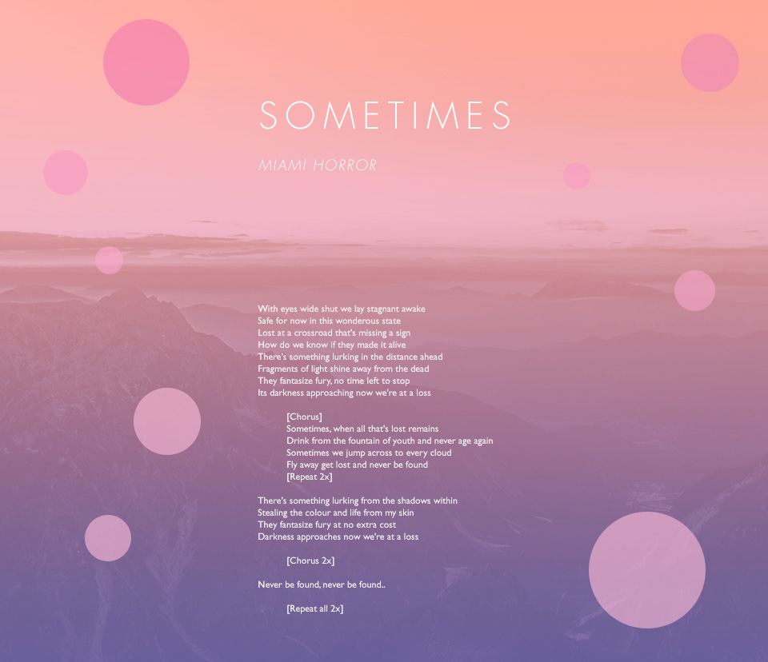

Improvement Plan
I talked with Nicole Seo and Sukari Stone. I didn't follow all of their suggestions, but here are the ones that I did follow:
- Try different colours for the bubbles because they blend it too much with the background at certain parts.
- Increase the line height.
- Think about how much of the lyrics I want the viewer to see at first glance through the viewport. Try making the first verse end right above the bottom of the viewport.
- Align certain stanzas differently.
Original

Revised
